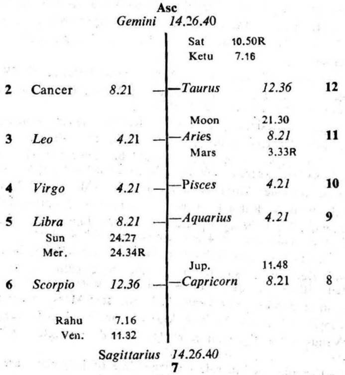
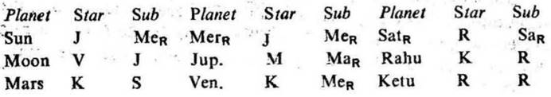

Question. When shall I go to Chicago.U.S.A. ?
Number. 51 (out of 249)
Place of Judgment. 23°N 2′, 72°E 35′.
Time of Judgment. 10-11-1973, Saturday; 2-42 P.M. I.S.T.


In this horary map Moon is in the star Venus owning 12 and occupying 6. It is in the sub Jupiter owning 10. So it is the significator of 6 (employment), 12 (stay in foreign land) and connected with 10 (prospects). Thus Moon indicates that the querent desires to go abroad for better prospects in employment.
Cuspal Sub lord
12th Cusp. The sub lord of the 12th cusp is Rahu. It is in the star Ketu in 12 (being in conj. represents Saturn owning 9) and in its own sub (Rahu) in 6. So it is the significator of 9, 12 and connected with 6. Hence Rahu promises going abroad and staying there for a job.
11th Cusp. The sub lord of the 11th cusp is Jupiter. It is in the star Moon owning 2 and occupying 11. (Moon being aspected by Sun owning 3 is connected with 3). It is in the sub Mars owning 6, 11 and occupying 10. So it is the significator of 2, 11 and connected with 3, 6, 10 and 11. Hence Jupiter promises the fulfilment of the querent's desire for financial prospects in foreign land.
At the time of judgment (Venus Dasha balance 7Y 9M 0D) the querent is running the joint period of Venus and Jupiter which continues upto 10-6-1974.
(a) Venus (the period ruler) is the sub lord of the 9th cusp (foreign travel). It is in the star Ketu in 12 (representing Saturn owning 9). It is in the sub Mercury; the sub lord Mercury is in conj. with Sun owning 3, and aspected by Moon owning 2 and by Mars owning 6 and 11. so Mercury is connected with 2, 3, 6 and 11. Thus Venus is the significator of 9, 12 and connected with 2, 3, 6 and 11. So the period of Venus is favourable for foreign travel and financial prospects.
But Venus is in the sub of retrograde Mercury, Mercury gets direct in motion on 17° 15′ Libra from 20-11-1973 and it crosses the original point of retrogradation (i. e. Scorpio 3° 13′) on 6-12-1973. So after this date Venus will begin to manifest its favourable influence.
(b) The sub period ruler Jupiter as discussed above is favourable for fulfilling the querent's desire before 10-6-1974.
Now Jupiter is in the sub of retrograde Mars; Mars gets direct in motion on 1° 55′ Aries from 26-11-1973 and it crosses the original point of retrogradation (i. e. Aries 15° 53′) on 18-1-1974. So the querent will be able to go abroad between 18-1-1974 and 10-6-1974.
(c) During this time the inter period of Rahu will be in progress (16-1-1974 to 10-6-1974). Rahu as already discussed will be most congenial for foreign travel and stay at abroad when the transit agrees.
(d) In this case Venus (the cuspal sub lord of 9), Jupiter (the cuspal sub lord of 11) and Rahu (the cuspal sub lord of 12) are the significators of and connected with foreign travel and financial prospects. So their joint period is fruitful for foreign travel. Moreover, the querent is running the joint period of the same planets viz. Venus and Jupiter at the time of judgment.
Rahu in transit will move from 3° 40′ Sagittarius to 26° 3′ Scorpio between 16-1-1974 and 10-6-1974, and it will pass through the sub of Jupiter between 7-5-1974 and 9-6-1974.
Jupiter in transit will move from 18° 55′ to 23° 16′ in Aquarius between 7-5-1974 and 9-6-1974, and it will pass through the stars of Rahu and Jupiter.
So the querent will go to Chicago during this time, in the joint period of Venus, Jupiter and Rahu.
Actually he started for Chicago on 8-6-1974 at 1-30 A. M. I. S. T. by aeroplane. At that time Sun was transitting in Taurus 23° 20′ from the 12th house in the star Mars (the sookshma period ruler); Moon in Sagittarius 25° 11′ in the star Venus (the period ruler); Venus in Aries 15° 30′ in its own star; Jupiter in Aquarius 23° 5′ in its own star Jupiter (the sub period ruler); and Rahu in Scorpio 26° 9′ in the sub Jupiter.